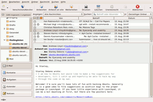
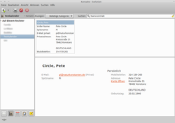
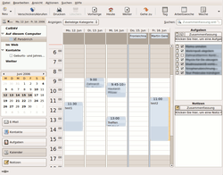

Evolution
Dieser Artikel wurde für die folgenden Ubuntu-Versionen getestet:
Ubuntu 16.04 Xenial Xerus
Ubuntu 14.04 Trusty Tahr
Zum Verständnis dieses Artikels sind folgende Seiten hilfreich:
 Evolution
Evolution  ist die E-Mail- und PIM-Suite der GNOME-Desktopumgebung und verfügt über einen sehr großen Funktionsumfang. Eine Konfiguration lohnt sich möglicherweise auch, wenn man einen anderen E-Mail-Client bevorzugt, weil Evolution sehr gut in GNOME integriert ist.
ist die E-Mail- und PIM-Suite der GNOME-Desktopumgebung und verfügt über einen sehr großen Funktionsumfang. Eine Konfiguration lohnt sich möglicherweise auch, wenn man einen anderen E-Mail-Client bevorzugt, weil Evolution sehr gut in GNOME integriert ist.
Evolution vereint folgende Anwendungen:
E-Mail-Client und Newsreader
Kontaktverwaltung
Kalender
Aufgaben- und Notizverwaltung
Synchronisation mit Palm-PDAs
Eine Alternative zu Evolution kann Balsa sein.
Installation¶
 Bei einer Standard-Installation von Ubuntu GNOME ist Evolution bis Ubuntu 16.10 bereits vorinstalliert, ansonsten müssen für die Nutzung des vollen Funktionsumfangs folgende Pakete installiert werden [1]:
Bei einer Standard-Installation von Ubuntu GNOME ist Evolution bis Ubuntu 16.10 bereits vorinstalliert, ansonsten müssen für die Nutzung des vollen Funktionsumfangs folgende Pakete installiert werden [1]:
evolution
 mit apturl
mit apturl
Paketliste zum Kopieren:
sudo apt-get install evolution
sudo aptitude install evolution
E-Mail¶
Der moderne E-Mail-Client kann mehrere Konten folgender Art verwalten und verfügt über einen lernfähigen Junk-Filter: 
IMAP
POP
Novel GroupWise
USENET-News
Mailordner im MH- und im Maildir-Format
Beim ersten Start von Evolution öffnet sich ein Einrichtungsassistent. Will man ein E-Mail-Konto später einrichten, verändern oder hinzufügen, kann man dies jederzeit über das Menü "Bearbeiten -> Einstellungen" nachholen.
Ein Konto, mehrere E-Mail-Adressen¶
Evolution richtet standardmäßig pro Konto nur eine E-Mail-Adresse ein. Manchmal hat man aber zu einem Konto eine oder mehrere E-Mail-Adressen konfiguriert. Wenn man diese zusätzliche E-Mail-Adresse unter Evolution nutzen möchte, richtet man mit dem Assistenten ein neues Konto für diese E-Mail-Adresse ein, wählt aber beim dritten Schritt "Abrufen von E-Mails" unter "Server-Art" "Keine" aus. Alle weiteren Eintragungen sind wie bei einem normalen E-Mail-Konto vorzunehmen.
Hinweis:
Umlaute wie ä ö ü ß im Passwort funktionieren nicht!
E-Mail-Eingangsüberwachung¶
Das separate Programm Mail Notification hat den Anspruch, für sehr viele verschiedene Mail-Dienste eine Benachrichtigung anzubieten. Bei webbasierenden Mail-Diensten wie z.B. Web.de oder Gmail klappt das alles auch wunderbar. Mail Notification aufrufen, einrichten und es werden automatisch eingehende Mails angezeigt. Diese Mails können dann mit Evolution abgerufen werden.
Dies geschieht über das Paket
mail-notification-evolution (universe)
mit apturl
Paketliste zum Kopieren:
sudo apt-get install mail-notification-evolution
sudo aptitude install mail-notification-evolution
Damit man ohne Evolution über neue Mails benachrichtigt wird, kann man die Konten, die man in Evolution eingestellt hat, nochmal in Mail Notification einbauen. Für IMAP-Konten wird auch IMAP-Idle von Mail Notification direkt unterstützt, so dass man sehr schnell über neue Mails unterrichtet wird und Evolution so nicht im Hintergrund laufen muss.
Falls man Evolution in das Benachrichtigungsfeld ("Systray") verschieben möchte, kann das Programm AllTray weiterhelfen.
GnuPG-Verschlüsselung¶
Um E-Mails den Postkartencharakter zu nehmen, muss man seine Mails verschlüsseln. Dafür hat sich der OpenPGP-Standard eingebürgert, der in Evolution über das GnuPG-Paket implementiert wird. (Mehr Informationen im Artikel GnuPG.) Um E-Mails derartig verschlüsseln zu können, müssen zunächst mit GnuPG ein Public Key und Private Key (ein Schlüsselpaar) generiert werden und dann die Kontoeigenschaften des Kontos geöffnet werden, für welches das Schlüsselpaar erzeugt wurde, um unter dem Reiter "Sicherheit" als PGP/GPG-Schlüsselkennung die Key-ID (achtstelliger Hex-Wert) des öffentlichen Schlüssels anzugeben.
Ab jetzt können eigene Mails signiert werden. Damit der Empfänger die Signatur auch nutzen kann, ist es notwendig, dass er den öffentlichen Schlüssel des Absenders hat. Diesen kann er von einem Schlüsselserver (sofern vom Absender hochgeladen) oder direkt vom Absender (als Mail-Anhang oder via USB-Stick) importieren.
Um auch verschlüsselte E-Mails verschicken zu können, benötigt man natürlich den öffentlichen Schlüssel des Empfängers, welcher in GnuPG importiert werden muss (via Schlüsselserver oder direkt). Nachdem der Schlüssel erfolgreich importiert wurde, kann man beim Verfassen einer Mail unter dem Menüpunkt "Sicherheit" die Verschlüsselung auswählen. Sollen verschlüsselte Mails empfangen werden, so muss dem Absender der eigene öffentliche Schlüssel ebenfalls zur Verfügung gestellt werden.
Hinweis:
Schlüssel automatisch importieren¶
GPG kann einen Schlüssel automatisch von einem bestimmten Server abrufen.
Der Schlüsselserver kann dabei beliebig angepasst werden. Zu beachten ist jedoch, dass nur diejenigen Schlüssel importiert werden, die sich auch auf dem angegebenen Server befinden. Liegt der benötigte Schlüssel auf einem anderen Server, muss er weiterhin manuell importiert werden.
Signierte E-Mails¶
Um die Echtheit signierter E-Mails zu überprüfen, sollte man das öffentliche Zertifikat (Schlüssel) des Absenders unter "Bearbeiten -> Einstellungen -> Zertifikate -> Zertifizierungsstellen" importieren. Diese Zertifikate sind oftmals auf der Homepage des Erstellers zu finden.
Firmenschlüssel¶
Wenn jemand einen Firmenschlüssel heraus gibt, über den alle Mails an Empfänger der Firma zentral ver- und entschlüsselt werden, dann muss in ~/.gnupg/gpg.conf ein Eintrag für jeden Mitarbeiter der Firma erstellt werden, an den man verschlüsselt senden möchte:
group mailadresse@firmenname.de = 0x12345678
Wobei "mailadresse@firmenname.de" die Adresse ist, an die man senden möchte und "0x12345678" die Schlüssel-Kennung ist. Danach akzeptiert und verschlüsselt Evolution auch Mails an Empfänger, die nicht im Schlüssel genannt wurden. Das funktioniert aber nur, wenn diese "Firma" eine zentrale Verschlüsselung verwendet. Dies wird wahrscheinlich auch für andere Mail-Clients funktionieren. Getestet mit Evolution.
TNEF-Filter¶
Es kann vorkommen, dass man von Kollegen oder Freunden, die Microsoft Office verwenden, Mailanhänge als Datei winmail.dat erhält. Standardmäßig kann Evolution diese Anhänge nicht öffnen. Seit Ubuntu 9.04 existiert das Zusatzpaket evolution-plugins-experimental, welches unter anderem das Plugin tnef-attachments beinhaltet. Für die Benutzung muss folgendes Paket installiert werden:
evolution-plugins-experimental (universe)
mit apturl
Paketliste zum Kopieren:
sudo apt-get install evolution-plugins-experimental
sudo aptitude install evolution-plugins-experimental
Nach einem Neustart von Evolution ist das TNEF-Plugin automatisch aktiviert. Von nun an werden alle winmail.dat-Anhänge automatisch dekodiert, so dass sie problemlos geöffnet werden können.
Spamfilter¶
Zum Ausfiltern von Werbung können entweder Bogofilter oder SpamAssassin verwendet werden. Weitere Details im Unterartikel Evolution/Spamfilter.
Kontaktverwaltung¶
Da es sich bei Evolution nicht nur um ein E-Mail-Programm handelt, bietet die Software eine sehr umfassende Kontaktverwaltung. Kontakte können in beliebig vielen Adressbüchern verwaltet werden, die lokal oder per LDAP-Server gespeichert sind. Die Daten können auch von anderen GNOME-Applikationen genutzt werden: 
GNOME-Panel: mit dem contact-lookup-applet (bei Standard-Ubuntu-Installation bereits installiert) lassen sich schnell die Evolution-Adressbücher durchsuchen und Einträge anzeigen.
Nautilus: nautilus-sendto (bei Standard-Ubuntu-Installation bereits installiert) ermöglicht den unkomplizierten Dateiversand über das Kontextmenü per "
 -Klick -> Senden an...".
-Klick -> Senden an...". Pidgin: Werden im Evolution-Kontakt Daten zu Instant Messaging-Protokollen angegeben, können diese einfach über den Menüpunkt "Buddies -> Buddy hinzufügen" in die Buddy-Liste aufgenommen werden.
OpenOffice.org: sofern das Paket openoffice.org-evolution installiert ist, kann das Adressbuch von Evolution in OpenOffice als Datenquelle benutzt werden.
LibreOffice: das Einbinden des Adressbuches ist nach der Installation des Paketes libreoffice-evolution möglich.
Kontaktlisten: In Evolution ist das Anlegen von Kontaktlisten ähnlich den Email-Verteilergruppen in Outlook möglich. Unter dem Menüpunkt "Datei -> Neu -> Kontaktliste" oder per Tastenkombination Strg + ⇧ + L kann eine neue Kontaktliste erstellt werden.
Es besteht die Möglichkeit, Google-Kontakte in Evolution einzubinden. Diese werden in beide Richtungen synchronisiert, bestehende Einschränkungen sind minimal und die Ergebnisse kaum zu beanstanden. s. Linux.com
.
Kalender¶
Die Integration der Kalenderfunktion ist ein wesentlicher Unterschied zu einem reinen E-Mail-Programm. Evolution kann mit mehreren Kalendern gleichzeitig umgehen, die lokal oder online vorliegen können. Evolution unterstützt Kalender im vCalendar- und iCalendar-Format. 
Termine werden, wenn nicht anders angegeben, im Kalender "Persönlich" angelegt
Geburtstage und Jahrestage von Kontakten werden in jeder Kalenderansicht angezeigt
lokal gespeicherte Kalender im .ics-Format werden mit der Importfunktion eingefügt
Kalender, die online vorliegen, können ebenfalls abonniert und in einem festgelegten Intervall aktualisiert werden. Wird WebDAV genutzt, wird der zu abonnierende Kalender aus dem Web-Browser heraus (getestet mit Epiphany und Mozilla Firefox) in Evolution hinzugefügt
WebDAV ermöglicht im Gegenzug auch die Veröffentlichung von Kalenderdateien direkt aus Evolution heraus. So hat man die Möglichkeit, Kalenderinformationen für andere Nutzer und Standorte stets aktuell zu halten.
Auch der Google Calendar
 lässt sich einbinden.
lässt sich einbinden.Um Kalender von Outlook.com
einzubinden muss der entsprechende Kalender auf Outlook.com geteilt werden ("Teilen -> <Ein_Kalender> -> Link abrufen") und der 'webcals://' Link in einen 'https://' Link geändert werden. Dieser kann dann in Evolution als Online-Kalender mit individuellem Aktualisierungsintervall hinzugefügt werden.
Sinnvollerweise greift auch das Uhrenapplet (Zeit-/Datumsanzeige) im GNOME-Panel auf Daten aus Evolution zurück. Beim Anklicken der Anzeige öffnet sich eine Ansicht des aktuellen Monats und es werden Ereignisse und Aufgaben angezeigt.
Newsreader¶
Evolution kann auch als Newsreader eingerichtet werden, ist aber in Optik, Übersichtlichkeit und Funktionalität anderen Programmen unterlegen. Für GNOME-Nutzer ist Liferea oder Pan die bessere Wahl, für KDE gibt es KNode (auch als Bestandteil von Kontact). Auch Mozilla Thunderbird enthält einen sehr komfortabler Newsreader.
Ein neues Konto erstellt man unter "Menü -> Bearbeiten -> Einstellungen -> E-Mail-Konten -> Hinzufügen". Bei der Abfrage "Server-Typ" dann "USENET-News" auswählen und die entsprechenden Zugangsdaten angeben. Abonnieren kann man Gruppen über "Menü -> Ordner -> Abonnements", dann das Konto auswählen und die gewünschten Gruppen mit einem Häkchen versehen. Man kann sich die Posts nach Threads sortieren lassen.
Die Überschaubarkeit lässt in der Standardeinstellung zu wünschen übrig. Um diese zu verbessern, kann man die Spalte "Betreff" vor die Spalte "Von" schieben und die Spalte "Von" durch "Absender" ersetzen. Das entspricht dann der von anderen Newsreadern gewohnten Ansicht.
RSS-Reader¶
Sollen mit Evolution auch RSS-Feeds gelesen werden können, muss zusätzlich das Paket
evolution-rss (universe)
mit apturl
Paketliste zum Kopieren:
sudo apt-get install evolution-rss
sudo aptitude install evolution-rss
installiert werden. Ist dies geschehen, können in Evolution unter "Menü -> Bearbeiten -> Einstellungen -> News & Blogs" die RSS-Feeds eingerichtet werden. In der E-Mail-Ansicht erscheinen die abonnierten RSS-Feeds dann im Baum unter dem Ordner "News & Blogs" mit ihrem jeweiligen Namen. Die Feeds werden automatisch beim Abholen und Senden der E-Mails aktualisiert, alternativ kann dies auch mit der F11 geschehen.
Backups¶
Evolution speichert seine Daten wie E-Mails, Adressbuch im Homeverzeichnis unter
~/.local/share/evolution/mail/local/folders.db
Die Einstellungen des Programms Evolution sowie alle Mailkonto-Daten werden hingegen in der Registrierungsdatenbank GConf gespeichert. Die Passwörter liegen nochmal an einer anderen Stelle.
Über das Menü "Datei -> Einstellungen sichern" ist es direkt in Evolution möglich, ein Backup zu erstellen.
Backup zurückspielen¶
Man kann das über das Menü erstellte Backup direkt im Einrichtungs-Assistenten angeben oder später per Menü "Datei -> Einstellungen zurücksetzen" wiederherstellen.
1. Daten wieder einspielen¶
Einfach die erstellte Datei im Homeverzeichnis wieder entpacken.
tar -xzf ~/evolution_backup*
2. Gconf-Daten zurückspielen¶
Die Daten wieder in die Gconf-Datenbank zurückspielen.
gconftool --load=$HOME/.local/share/evolution/backup-restore-gconf.xml
Adressbuch exportieren¶
So wird das default (Kontakte) Adressbuch als *.csv Datei exportiert:
evolution-addressbook-export --output=/Pfad/zur/datei.csv --format=csv
Bei anderen Adressbüchern müssen zuerst die IDs ausgelesen werden:
evolution-addressbook-export -l
Beispiel:
"file:///home/user/.evolution/addressbook/local/system","Persönlich",118 "file:///home/user/.evolution/addressbook/local/1242833850.6227.0@ubuntu","old",2 "file:///home/user/.evolution/addressbook/local/1247661248.7506.4@ubuntu","new",22
Nun kann z.B. das Adressbuch new als new.csv Datei exportiert werden :
evolution-addressbook-export --output=/home/user/Dokumente/new.csv "file:///home/user/.evolution/addressbook/local/1247661248.7506.4@ubuntu" --format=csv
Passwörter übernehmen¶
Das einzige, was bei dieser Anleitung nicht übernommen wurde, sind die Passwörter der Mail-Konten. Hier reicht es, den Ordner ~/.gnome2 in das Backup mit einzubeziehen.
Datenmigration¶
Die Übernahme von E-Mails sowie der Import von Adressen und Kalenderdaten wird in einem eigenen Artikel behandelt: Evolution/Datenmigration
Exchange-Server¶
Um mit einem Exchange-Server zu arbeiten ist es nötig
evolution-ews
mit apturl
Paketliste zum Kopieren:
sudo apt-get install evolution-ews
sudo aptitude install evolution-ews
zu installieren
Signaturen¶
Eine neue Signatur kann über den Menü-Eintrag "Bearbeiten -> Einstellung -> E-Mail Konten -> Bearbeiten -> Neue Signatur" erstellt werden. Eine bestehende Signatur bearbeitet man über "Bearbeiten -> Einstellung -> Editor Einstellungen -> Signatur -> Bearbeiten".
Signatur-Skripte¶
Evolution bietet die Möglichkeit, Skripte auszuführen, was zur Automatisierung von Signaturen von E-Mails verwendet werden kann. Zuerst wird ein Bash-Skript erstellt, welches die gewünschten Befehle enthält. Als Beispiel hier eine Signatur mit Sprüchen aus der Datenbank von fortune.
1 2 3 4 5 6 | #!/bin/bash echo "<div>--------------o</div>" echo "<pre>" fortune echo "</pre>" echo "<div>--------------o</div>" |
Die <div> und <pre>-Klammern dienen der Formatierung des Textes. So wird durch <div> ein Trenner erzeugt und durch <pre> die ursprüngliche Formatierung des Textes von fortune beibehalten. Das Skript wird gespeichert und ausführbar gemacht.
Über "Bearbeiten -> Einstellungen -> Editoreneinstellugen -> Signaturen -> Signatur Hinzufügen" gelangt man in den Einstellungs-Dialog. Dort kann man dann das Skript suchen und hinzufügen. Wenn man jetzt eine E-Mail verschickt, steht einem rechts oben unter Signatur in der Auswahl das hinzugefügte Skript zur Verfügung. Wählt man dies, wird automatisch der vom Skript generierte Text an die Mail angehängt.
Problembehebung¶
Evolutions Mailkontenüberwachung funktioniert nicht¶
Seit 12.04 funktioniert die Evolution eigene E-Mail Überwachung (mail-notification-evolution) nicht oder nur unregelmäßig. Es empfiehlt sich in diesem Falle auf ein externes Tool auszuweichen. Ein Kandidat wäre "mailnag", das für den Einsatz auf der GNOME-Shell angepasst ist und sich problemlos nach installieren lässt. "Mailnag" ist in den offiziellen Quellen verfügbar.
Suchfunktion findet nichts¶
Suche in "Derzeitiger Ordner" sollte zumindest gehen, wenn Suche in "Alle Konten" keine Ergebnisse anzeigt
Links in Mails werden nicht in Firefox geöffnet¶
Nach einer Aktualisierung von Firefox kann es vorkommen, dass Links, die in Mails stehen, beim Anklicken nicht mehr in Firefox geöffnet werden.
Evolution und offene Evolution-Fenster (z.B. Mails) sollten zuerst geschlossen werden.
Pfad nachsehen: Mit dem Dateimanager sollte man nachsehen, in welchem Ordner (z.B. /usr/lib/firefox) die Anwendung Firefox zu finden ist.
Danach sollte überprüft werden, ob der korrekte Pfad bei den "Bevorzugten Anwendungen" angegeben ist. Unter "System -> Einstellungen -> Bevorzugte Anwendungen -> Internet" sollte Firefox stehen oder der Pfad /usr/lib/firefox/firefox "%s".
Evolution öffnen. Jetzt sollten die Links in Mails beim Anklicken wieder in Firefox geöffnet werden.
Verschicken/Empfangen-Schaltfläche deaktiviert¶
Wenn Evolution im Offline-Modus ist, kann nicht empfangen und gesendet werden. Entsprechend ist der Button ausgegraut. In den Online-Modus wechselt man durch Klick auf die beiden Kabelenden links unten in der Statusleiste oder über das Menü "Datei -> Online arbeiten".
Evolution meldet neue E-Mails, zeigt aber keine E-Mails an¶
Löscht man die versteckte Datei
~/.local/share/evolution/mail/local/folders.db
und startet dann Evolution neu, ist das Problem behoben.
Evolution kann nicht mehr auf Termine, Aufgaben oder Notizen zugreifen¶
Wenn Evolution beim Zugriff auf den Kalender, die Aufgabenliste oder die Notizen regelmäßig mit einer Fehlermeldung abbricht, kann man das durch Löschen oder Umbenennen der folgenden Dateien beheben.
für den „persönlichen“ Kalender:
~/.local/share/evolution/calendar/local/system/calendar.ics
für die Notizen:
~/.local/share/evolution/memos/local/system/memos.ics
für die Aufgaben:
~/.local/share/evolution/tasks/local/system/tasks.ics
Wird Evolution anschließend neu gestartet, funktionieren Kalender, Aufgaben und Notizen wieder einwandfrei.
Achtung!
Die bereits eingetragenen Termine, Aufgaben bzw. Notizen gehen hiermit allerdings verloren.
Der Ordner Müll lässt sich nicht mehr leeren¶
Wenn sich der Ordnerinhalt mit der Fehlermeldung
Fehler bei "Ordner wird gesäubert"
nicht mehr löschen lässt, kann folgende Vorgehensweise Abhilfe schaffen:
Mit "Datei -> Einstellungen sichern ..." sollte sicherheitshalber ein Backup der Einstellungen und Mails erstellt werden
Evolution schließen
evolution --force-shutdown
Löschen der (versteckten) Datei:
~/.local/share/evolution/mail/local/folders.db
Evolution neu starten
Jetzt sollte der Müll gelöscht werden können. Nach einem Doppelklick auf jeden einzelnen Ordner der Ordnerstruktur in Evolution wird die Datenbankdatei folders.db wieder mit den erforderlichen Daten gefüllt. Es kann dabei zu einer kurzen Verzögerung (mehrere Sekunden, je nach Mail-Anzahl) kommen, bis die Mails im Ordner wieder angezeigt werden.
Evolution deinstallieren¶
Bei der manuellen Deinstallation von Evolution muss man ein bisschen Vorsicht walten lassen, da es evolution-Pakete gibt, die nicht nur für Evolution benötigt werden, sondern auch elementare Funktionen für Gnome bereitstellen: Die Pakete evolution-data-server-common und evolution-data-server dürfen daher nicht deinstalliert werden!
Um Evolution zu deinstallieren, können folgende Pakete entfernt werden:
evolution
evolution-common
evolution-webcal
evolution-plugins
openoffice.org-evolution
libreoffice-evolution
Zusätzlich kann das Verzeichnis ~/.local/share/evolution/ bzw. ~/.evolution/ gelöscht werden.
Links¶
Intern¶
Evolution/Datenmigration - Thunderbird, Outlook, Adress- und Kalenderdaten
Evolution/Synchronisation - mit Mobiltelefonen
Evolution/Spamfilter - Werbung per E-Mail ausfiltern
Extern¶
Evolution - Wikipedia
ICalendar - Wikipedia
Feiertage und Ferien als Kalenderdateien
- Sunbird-kalender.deiCalShare
- größtes iCal-Verzeichnis
- Erstellt mit Inyoka
-
 2004 – 2017 ubuntuusers.de • Einige Rechte vorbehalten
2004 – 2017 ubuntuusers.de • Einige Rechte vorbehalten
Lizenz • Kontakt • Datenschutz • Impressum • Serverstatus -
Serverhousing gespendet von